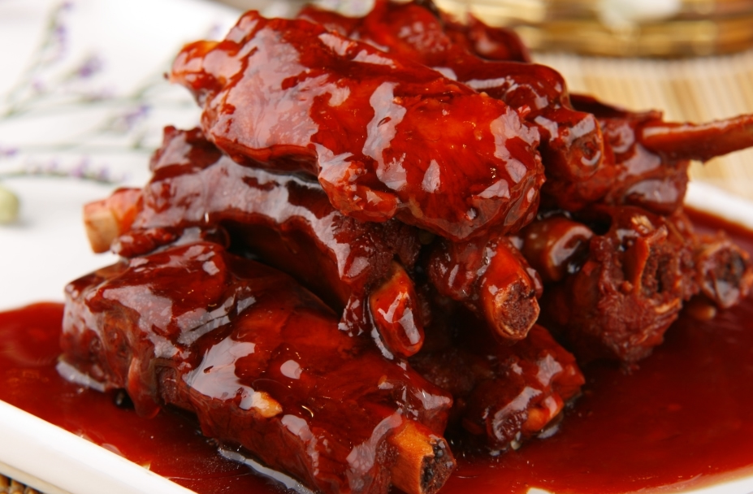

| 无锡酱排骨 |  |
历史渊源无锡酱排骨的起源可以追溯到清朝同治年间（1871年），当时无锡县城内的一对夫妇经营小肉摊，因而意外创造出这道“甜咸相济”的佳肴。随着时间的推移，这道菜逐渐演变并发扬光大，成为无锡的代表性美食之一。制作工艺制作无锡酱排骨的关键在于选材和调味。通常选用优质的猪肋排，经过180℃油温走油锁住肉汁，再以双套酱油与多种香料慢炖数小时，使肉质酥而不散，咸味与甜味相得益彰。其独特的风味使其成为无锡饮食文化的重要代表。文化地位无锡酱排骨不仅在当地受到欢迎，还在全国范围内享有盛誉。它被誉为国宴级菜品，曾多次出现在央视节目中，成为无锡的美食名片。无锡酱排骨与无锡清水油面筋、惠山泥阿福并列为无锡三大名产，深受食客喜爱。 |
|
| 上一篇：无锡小笼包 | 返回 |